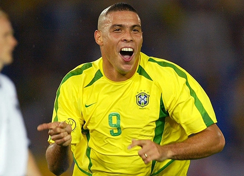

Ronaldo Fenomeno Historia de vida
Ronaldo Fenômeno, nascido em 1976 no Rio de Janeiro, é um dos maiores jogadores de futebol da história. Ele iniciou sua carreira no Cruzeiro e, ainda jovem, foi para a Europa, onde brilhou no PSV, Barcelona e Inter de Milão, sendo conhecido pela velocidade, dribles e finalização. Em 1997, foi eleito o Melhor do Mundo pela FIFA, mas sua carreira foi marcada por lesões graves nos joelhos. Após um longo período de recuperação, Ronaldo protagonizou a Copa do Mundo de 2002, levando o Brasil ao título e sendo artilheiro do torneio. Depois, integrou o time dos "Galácticos" no Real Madrid. Nos últimos anos, voltou ao Brasil para jogar pelo Corinthians e encerrou a carreira em 2011. Após a aposentadoria, Ronaldo tornou-se empresário e comprou o clube espanhol Real Valladolid, consolidando-se como ícone do esporte e figura influente no futebol mundial.
Seus 4 premios mais significativos de carreira
- Bola de Ouro (Ballon d'Or)
- 1997
- 2002
- Melhor Jogador do Mundo da FIFA (The Best FIFA Men's Player)
- 1996
- 1997
- Copa do Mundo
- 2002 (Brasil)
- Copa América
- 1997 (Brasil)
- 1999 (Brasil)